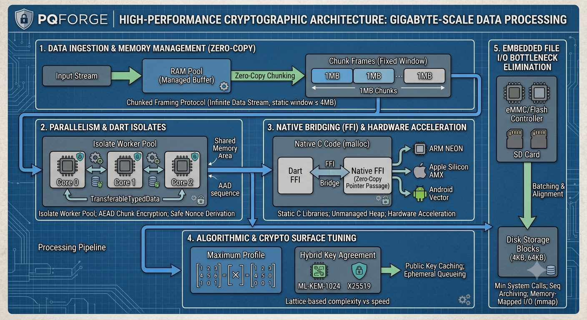

Local File Vault
developer machines, backup jobs, admin laptops, server batch jobs
encryptFileBytes, decryptFileBytes, encryptAsync, PqEnvelope
Post-quantum application recipes for Dart
pqforge turns the pqcrypto ML-KEM (FIPS 203) and ML-DSA (FIPS 204) primitives into application-ready cryptography: KEM-DEM envelopes, AES-256-GCM and ChaCha20-Poly1305 AEAD, X25519/Ed25519/ECDSA-P256 hybrids, bounded-memory gigabyte streaming, multi-recipient envelopes, Argon2id-wrapped key custody, named recipes, and a universal CLI. The core is pure Dart and web-safe — no dart:ffi.

Recipe catalog
developer machines, backup jobs, admin laptops, server batch jobs
encryptFileBytes, decryptFileBytes, encryptAsync, PqEnvelope
case files, release bundles, evidence folders, internal archives
encryptFolderEntry, decryptFolderEntry
many small files, site exports, evidence bundles, dataset shards
PqForgePackService (package:pqforge/pqforge_io.dart)
gigabyte media, datasets, disk images, backups, VM snapshots
PqForgeStreamCipher.encryptFile, decryptStream (package:pqforge/pqforge_io.dart)
shared vaults, team archives, escrow, break-glass recipients
encryptAsync, PqMultiRecipient, PqRecipientSpec
notes, secrets, prompts, policy snippets, short messages
sealText, openText, signText, verifyText
photos, audio, video, PDFs, campaign media, identity images
sealMedia, openMedia, signMedia, verifyMedia
contracts, reports, certificates, approvals, policy documents
signDocument, verifyDocument
release artifacts, firmware, long-lived approvals, dual-trust signing
PqForgeHybridSigner, PqEcdsaP256, dualSign, dualVerify
payment callbacks, audit delivery, server-to-server events
signWebhook, verifyWebhook
API capabilities, admin actions, short-lived grants
issueToken, verifyToken
encrypted mail bodies, secure notifications, outbound archive mail
sealEmail, openEmail
public-sector records, patient records, registry payloads
encryptRecord, appendSignedLogEntry
release bundles, firmware, packages, configuration rollouts
signArtifact, verifyArtifact
Serverpod, API services, local agents, backend handshakes
PqForgeHybridKeyAgreement, PqForgeSecureSession
Universal CLI
Generate reusable public keys and wrapped secret keys, then encrypt or sign files, folders, text, and media without writing application code.
export PQFORGE_PASSPHRASE='from-your-secret-manager'
dart run pqforge keygen --profile maximum --key-id vault --out-dir keys --passphrase-env PQFORGE_PASSPHRASE
dart run pqforge encrypt-folder --recipient-public keys/vault.kem.public.json --in-dir ./records --out-dir ./records.pqf
dart run pqforge decrypt-folder --recipient-secret keys/vault.kem.secret.wrapped.json --passphrase-env PQFORGE_PASSPHRASE --in-dir ./records.pqf --out-dir ./records.open
dart run pqforge sign --kind media --signer-secret keys/vault.sign.secret.wrapped.json --passphrase-env PQFORGE_PASSPHRASE --in cover.png --mime-type image/png --out cover.sig.jsonUse cases
developer machines, backup jobs, admin laptops, server batch jobs
case files, release bundles, evidence folders, internal archives
many small files, site exports, evidence bundles, dataset shards
gigabyte media, datasets, disk images, backups, VM snapshots
shared vaults, team archives, escrow, break-glass recipients
notes, secrets, prompts, policy snippets, short messages
photos, audio, video, PDFs, campaign media, identity images
contracts, reports, certificates, approvals, policy documents
release artifacts, firmware, long-lived approvals, dual-trust signing
payment callbacks, audit delivery, server-to-server events
API capabilities, admin actions, short-lived grants
encrypted mail bodies, secure notifications, outbound archive mail
public-sector records, patient records, registry payloads
release bundles, firmware, packages, configuration rollouts
Serverpod, API services, local agents, backend handshakes
Profiles
ML-KEM-512 + ML-DSA-44
smaller demos, constrained payloads, and low-bandwidth signaturesML-KEM-768 + ML-DSA-65
default application and server profileML-KEM-1024 + ML-DSA-87
long-lived records, archives, media, and high-value artifactsDocumentation
Claim boundary
pqforge is the application layer built on pqcrypto ML-KEM/ML-DSA. It does not claim CMVP/FIPS 140 validation, hard constant-time Dart behavior, or hard memory erasure. RC4 is rejected.
FAQ
pqforge is a pure-Dart post-quantum application toolkit. It turns the ML-KEM and ML-DSA primitives from pqcrypto into encrypted files, folders, text, media, email payloads, records, signed documents, signed webhooks, signed tokens, release artifacts, tamper-evident logs, hybrid sessions, wrapped key custody, and a universal CLI.
pqcrypto is the primitives layer: FIPS 203 ML-KEM, FIPS 204 ML-DSA, SHA-2, and SHA-3/SHAKE with zero runtime dependencies. pqforge is the application layer built on top of it: KEM-DEM envelopes, AES-256-GCM and ChaCha20-Poly1305 AEAD, X25519/Ed25519/ECDSA-P256 hybrids, key custody, streaming, multi-recipient envelopes, named recipes, and a CLI. Use pqcrypto for raw algorithms; use pqforge to ship a feature.
Yes. It uses NIST FIPS 203 ML-KEM for key establishment and FIPS 204 ML-DSA for signatures through pqcrypto, so confidentiality and signatures resist quantum attacks. Hybrid modes add X25519, Ed25519, or ECDSA-P256 so security also holds if a classical break ever lands on the post-quantum scheme.
Yes. The core import, package:pqforge/pqforge.dart, is pure Dart and web-safe with no dart:ffi, so the same code runs on the Dart VM, Flutter, and the web. Gigabyte-scale dart:io file streaming lives behind package:pqforge/pqforge_io.dart. On Flutter, FlutterCryptography.enable() adds hardware-backed AEAD.
Yes. Inputs at or above 8 MiB automatically use the .pqfs streaming container: a signed master header followed by independently authenticated frames, with a working set of roughly two frames regardless of total size. Per-frame sequence and final-flag binding prevent truncation, reordering, duplication, and splicing.
Yes. Repeat --recipient-public on the encrypt commands (or use PqMultiRecipient in the library). The payload is sealed exactly once and the DEM key is wrapped to each additional recipient as a metadata entry, costing about 1.6 KB and 2 ms per extra recipient instead of a full re-encryption. Entries can individually be hybrid, and it works for both one-shot envelopes and .pqfs streams.
AES-256-GCM (default) and ChaCha20-Poly1305, on a pure-Dart PointyCastle engine or the native package:cryptography engine. Where hardware AES is not dispatched, ChaCha20-Poly1305 measures about 30.4 MiB/s versus 11.5 MiB/s for AES-256-GCM (about 2.6x); with hardware AEAD both exceed 1 GB/s. RC4 is rejected.
--engine cryptography (the default) uses package:cryptography and is roughly 10x faster than the PointyCastle reference even in pure Dart, and hardware-backed on Flutter. --engine pure-dart uses PointyCastle only. The wire formats are engine-independent, so an envelope sealed by one engine opens on the other.
No. pqforge composes FIPS 203/204-aligned primitives from pqcrypto but is not a CMVP or FIPS 140 validated cryptographic module. A PqFipsMode deployment layer restricts suites to AES-256-GCM and PBKDF2-HMAC-SHA256 key wrapping (SP 800-132) and allows a swappable DRBG for validated-module deployments.
Yes. It provides ML-DSA detached signatures, recipe-bound signatures for documents, text, media, artifacts, tokens, and webhooks, hybrid ML-DSA + Ed25519/ECDSA-P256 signatures, and standalone ECDSA-P256 (RFC 6979 deterministic nonces, canonical low-S). AES never signs.
Yes. hybrid-sign --digest and ecdsa-sign --digest sign the streamed SHA-256 of the input under a domain-separation label, recorded in the signature JSON so the verify commands re-hash automatically. Envelope signatures are likewise computed over a header-plus-payload hash, so signing cost does not scale with payload size.
Yes. pqforge pack collapses a whole folder into one encrypted streaming archive with a single KEM encapsulation and signature for the tree, roughly 100x less ciphertext overhead than per-file envelopes for a thousand small files. pqforge unpack restores it path-traversal-safe, and a failed unpack removes everything it created.
Two independent hard problems guard the same secret. Hybrid encryption combines the ML-KEM shared secret with an ephemeral X25519 exchange using the IETF concatenate-then-KDF construction, so confidentiality holds while either Module-LWE or Curve25519 stands. Hybrid signatures pair an ML-DSA signature with an Ed25519 or ECDSA-P256 signature over the same message.
In the directory passed to keygen --out-dir. Public keys are raw JSON. Secret keys are wrapped JSON when a passphrase source is supplied. keygen emits the full hybrid keyset by default: ML-KEM and ML-DSA plus X25519, Ed25519, and ECDSA-P256.
Yes when keygen is run with --passphrase-env, --passphrase-file, or --passphrase. Wrapped secrets use Argon2id for passphrase-to-key derivation and AES-256-GCM for authenticated encryption of the key bytes, with AAD binding the key kind, algorithm, and key id.
Yes. pqforge inspect describes any .pqf, .pqfs, key, or signature file: format, profile, suite (for example ML-KEM-1024 + X25519 then HKDF-SHA-512 then AES-256-GCM), engine, signature, recipients, and metadata, without needing a secret key.
No. pqforge composes cryptographic building blocks. Public-key trust, identity vetting, replay windows, authorization policy, session storage, and TLS remain the application's responsibility. A self-provided public key is not an identity.
Yes, it is pure Dart with no dart:ffi, so it runs everywhere Dart runs, including the web. The OpenSSL interop harness used in CI to prove byte-compatibility with the system libcrypto is a separate publish_to: none dev package and is never shipped.
No. RC4 is not post-quantum, not authenticated encryption, not in pqcrypto, and not safe for new systems. pqforge offers AES-256-GCM and ChaCha20-Poly1305 instead.
No. AES encrypts; ML-DSA, hybrid signatures, or ECDSA-P256 sign and verify. Encryption and signing are distinct operations with distinct keys.
Local file vaults, folder and pack archives, server export jobs, gigabyte media and dataset pipelines, multi-recipient shared vaults, webhook systems, token issuers, document workflows, email payload protection, government and medical record systems, signed release and firmware pipelines, tamper-evident logs, and hybrid Serverpod/API server sessions.